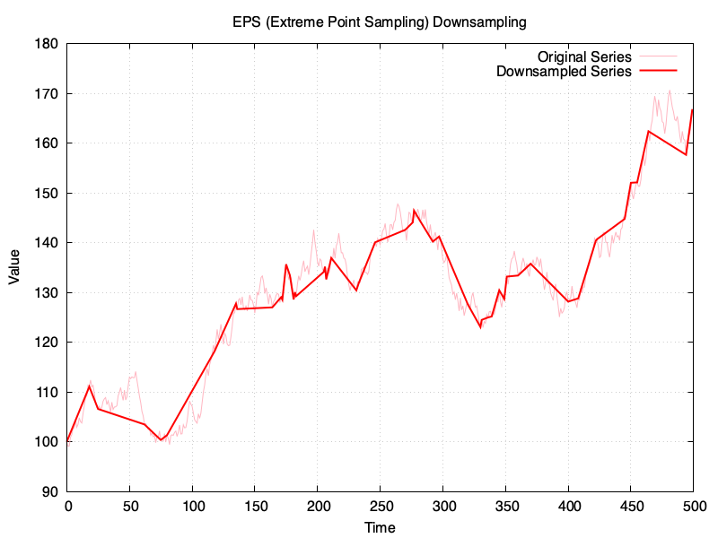

Evaluating downsampling algorithms
I've been playing around with ChatGPT lately and I wondered if it could help me compare some time-series downsampling algorithms like the one I implemented for Java.
When I asked ChatGPT about algorithms that would keep local extrema, it suggested Perceptually Important Points (PIP), Top-K Significant Extremes, Douglas-Peucker Algorithm (RDP), Extreme Point Sampling (EPS), and Local Extrema Retention (LER). It was funny to see that Largest-Triangle Three-Buckets wasn't in the list, but when I asked specifically about it, it was aware of it.
Despite asking, it wasn't fully clear to me how they compared to one each other because their description, pros and cons felt too similar, so I figured it might as well help me test them with some graphs.
I asked it to produce some Ruby scripts with their implementations, plotting code, and some code to generate a somewhat realistic synthetic time-series to test them.
The time-series to downsample is the same in all examples and it has 500 points, which will be downsampled to 50 points, or in the vicinity (for RDP). These are the results:


I've created a gist in GitHub with the sources for the Ruby script, and a copy of my chat with ChatGPT is at chat are here
Some insights:
An epsilon value of 3 would get me in the vicinity of the 50 points for the downsampled series in RDP, which is the target for the rest.
Funnily enough, LTTB is not faring too well compared to the others, especially when compared to PIP or RDP.